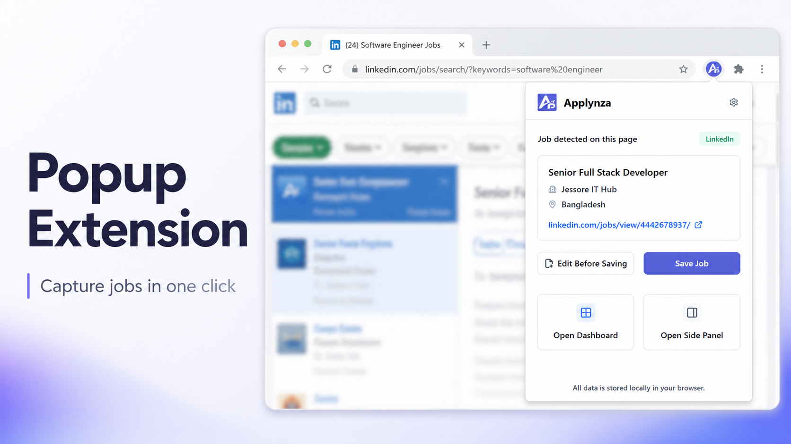

Track every job you find, right from your browser.
Applynza detects job details on the page you're viewing, lets you review or edit them, and saves everything instantly. Your workspace is stored locally by default, with optional Google sign-in to sync your jobs across devices.
- 4 permissions, nothing more
- No ads or analytics

Job saved
Stored on this device
Three surfaces, one workspace
Meet it where you're already working.
Quick capture in the popup, a working surface beside your tab, and a full dashboard when the list gets long.
Popup
Built for quick actions: detect the current posting, review what was captured, and save with one click.
- Detect the current job posting
- Edit details before saving
- Open the side panel or dashboard
Side panel
A larger workspace that stays open while you keep browsing job boards.
- View recently saved jobs
- Update application statuses
- Review upcoming reminders
Dashboard
The full workspace for managing larger amounts of application data.
- Searchable, structured job views
- Analytics on sources and companies
- Reminder management & export
Extension preview
See the interface before you install it.
Jump between the popup, side panel, and dashboard to get a feel for how Applynza looks across each workspace.
The workflow
From open tab to tracked application.
-
1
Open a supported posting
Browse job boards as you normally would. Nothing changes about how you look for roles.
-
2
Open the popup or side panel
Applynza reads the visible job information straight from the page.
-
3
Review and edit
Fix anything missing or wrong before it's saved to your workspace.
-
4
Save and track
The job moves into your local workspace, ready to update from the side panel or dashboard later.
Built for the day-to-day
Everything a job search actually needs.
Duplicate protection
Matches on job URL, company, and title so the same posting never gets saved twice.
Reminders
Set follow-up, interview, and deadline reminders so nothing slips past you.
Status tracking
Move each application through its progress, from applied to offer.
Review before saving
Detected details are always editable. Nothing saves without your say.
Recently saved
Your latest saves surface immediately in the popup and side panel.
Analytics
See where applications come from and how they're progressing, right in the dashboard.
Local-first, with optional sync
Your data stays local — unless you choose to sync.
Saved jobs, statuses, reminders, and preferences are stored locally in the browser by default. If you turn on sync, Applynza uses Google sign-in and securely syncs your Applynza data to your private cloud workspace so it is available on your other devices.
Permissions used
-
activeTab
Read the posting on the tab you're viewing, only when you ask.
-
scripting
Detect visible job details directly on the page.
-
sidePanel
Open the workspace beside your tab.
-
storage
Keep your saved jobs on this device, or sync them across devices when you choose.
Stop losing track of where you applied.
Applynza is free, local-first, and ready in minutes.
 Add to Chrome — it's free
Add to Chrome — it's free
- Free to use
- Local-first
- Setup in under 5 minutes